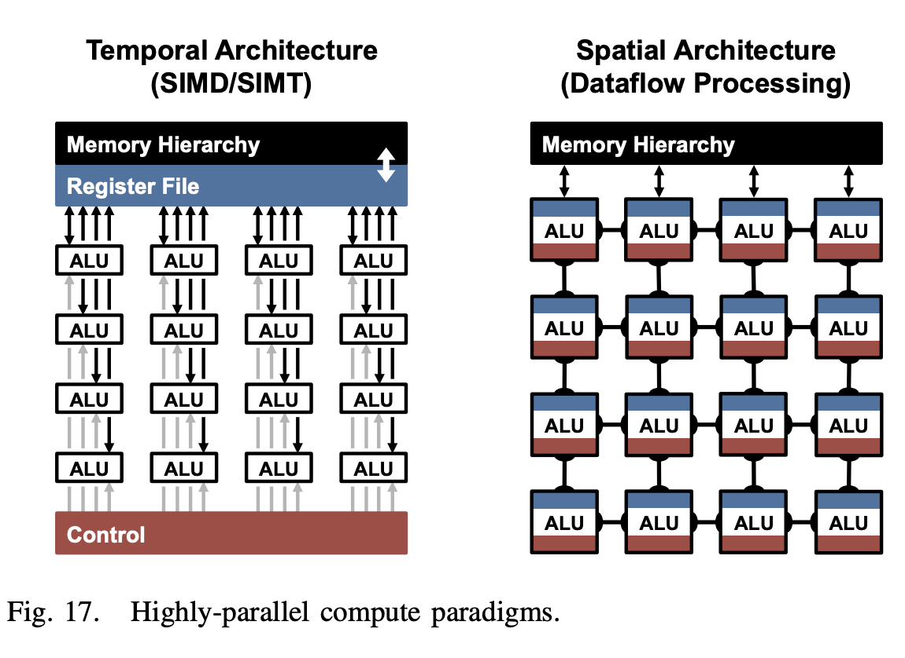
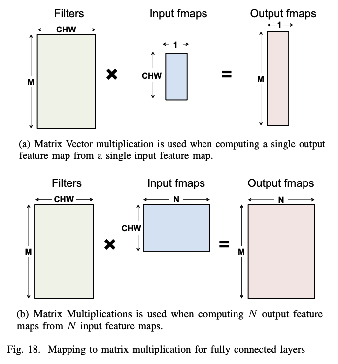
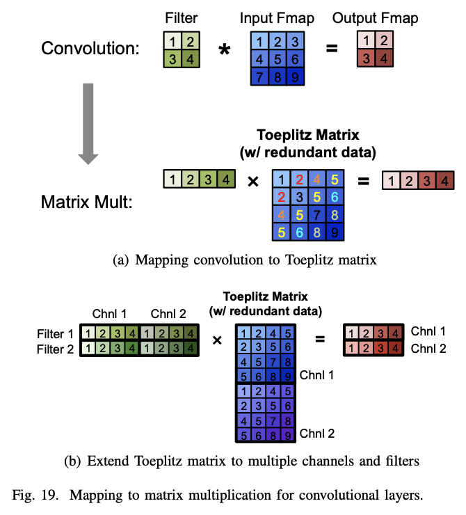
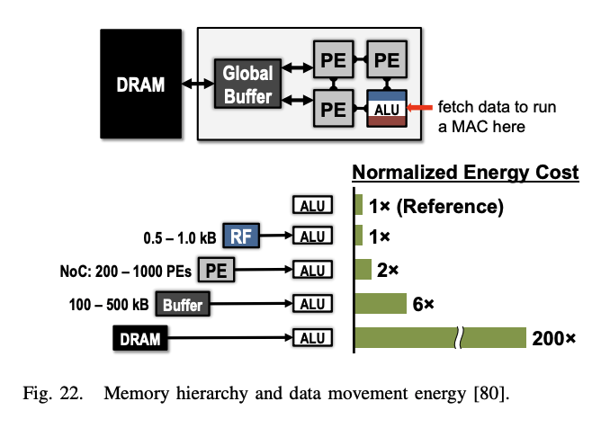
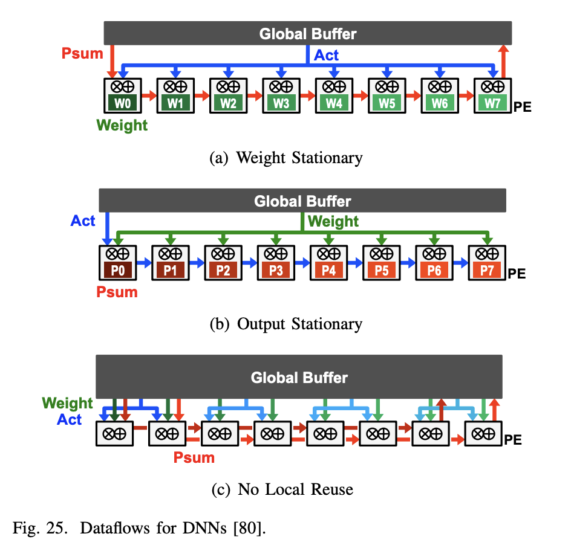
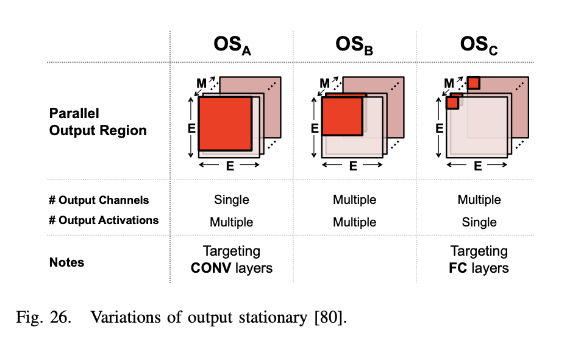

[Paper] Efficient Processing of Deep Neural Networks: A Tutorial and Survey (Part 2)
5. Hardware for DNN Processing
딥러닝의 인기 상승으로 인해, 많은 최근 하드웨어 플랫폼은 딥러닝 처리를 위한 특별한 기능을 제공하고 있다. 예를 들어, Intel Knights Landing CPU는 딥러닝을 위한 특수 벡터 명령어를 제공하고, Nvidia PASCAL GP100 GPU는 빠른 딥러닝 계산을 위해 단일 정밀도 코어에서 2개의 FP16 연산을 수행할 수 있는 16비트 부동 소수점 산술 지원을 제공한다. 또한, Nvidia DGX-1 및 Facebook의 Big Basin과 같은 DNN 처리를 위해 특별히 구축된 시스템도 있다. DNN 추론은 Nvidia Tegra 및 Samsung Exynos와 같은 다양한 임베디드 SoC 및 FPGA에서도 구현되었다. 이에 따라 이러한 플랫폼에서 처리가 어떻게 이루어지는지, 응용 프로그램별 가속기를 디자인하여 처리량과 에너지 효율성을 더욱 개선할 수 있는 방법에 대한 이해가 중요하다.

CONV 및 FC 레이어의 기본 구성 요소는 MACs 연산이다. 이는 쉽게 병렬화 할 수 있고, 고성능을 얻기 위해 매우 병렬적인 컴퓨팅 패러다임을 사용한다. 그 중에서도 시간적(temporal) 및 공간적(spatial) 아키텍처가 일반적이다. 시간적 아키텍처는 대개 CPU 또는 GPU에서 나타나며, SIMD 또는 SIMT와 같은 기술을 사용하여 병렬성을 구현한다. 반면 공간적 아키텍처는 데이터플로우 처리를 사용하며 ALU가 서로 직접 데이터를 전달할 수 있도록 처리 체인을 효율적으로 구성한다. 뒤 내용에서는 시간적 아키텍처에 대해서는 커널에서 계산 변환을 수행하여 곱셈 수를 줄여 처리량을 증가시키는 방법을 다루며, 가속기에서 사용되는 공간적 아키텍처에 대해서는 데이터 흐름을 통해 메모리 계층의 저비용 메모리에서 데이터 재사용을 증가시켜 에너지 소비를 줄이는 방법을 다룬다.
A. Accelerate Kernel Computation on CPU and GPU Platforms
CPU와 GPU는 SIMD 또는 SIMT와 같은 병렬화 기술을 사용하여 MACs를 병렬로 처리하며, FC 및 CONV 레이어는 매트릭스 곱셈으로 매핑된다.  그림에서는 fully connected layer 의 연산이 matrix muliplication 을 통해 어떻게 연산되는지 filter, input feature map, output feature map 의 크기 관점에서 보여준다.
 그림과 같이 DNN의 CONV 레이어는 Toeplitz 행렬의 간소화된 형태를 사용하여 행렬 곱셈으로 매핑할 수 있다. 그러나 이러한 방식은 원래의 input feature map 보다 더 많은 메모리를 사용하여 데이터 이동 관점에서의 효율성, 또는 연산의 복잡성으로 인한 효율성 저하를 야기할 수 있다. 이러한 방식은 CPU(예: OpenBLAS, Intel MKL 등)와 GPU(예: cuBLAS, cuDNN 등)를 위한 소프트웨어 라이브러리를 통해 지원되며 각각 플랫폼의 저장 계층에 맞게 행렬 곱셈이 타일 형태로 최적화된다. 이러한 플랫폼에서는 계산 변환을 적용하여 곱셈 수를 줄이면서도 동일한 비트 단위 결과를 얻을 수 있어서 더 빠른 연산이 가능하게 한다. 그러나 때로는 이러한 변환이 더 많은 덧셈을 필요로 하고 더 불규칙한 데이터 액세스 패턴을 유발할 수 있습니다.
또다른 방벙으로는 FFT (Fast Fourier Transform)을 사용하여 convolution 연산의 수를 줄일 수 있다. 필터와 입력 특징 맵의 FFT를 계산하고, 주파수 영역에서 곱셈을 수행한 다음 결과를 공간 영역으로 역 FFT를 적용하여 출력 특징 맵을 복원하는 방법을 통해 convolution 연산을 수행한다. 그러나 이러한 방법은 FFT로 인해 생길 수 있는 추가적인 메모리 사용 등의 단점이 있을 수 있으며, filter, 또는 input feature map 의 sparsity를 활용하기 어렵다는 부분도 단점이 될 수 있다. FFT의 효율성을 높이기 위한 몇 가지 최적화 기법이 있으며, 필터의 FFT를 미리 계산하고 저장하여 연산 수를 줄이는 방법 또한 존재한다.
그 외에도 convolution 연산 또는 matrix multiplication의 연산을 최적화하는 다양한 방법들이 연구되고 있으며, filter의 shape, 크기에 따라 다양한 방법을 적절히 적용하여 최적화를 수행할 수 있다.
B. Energy-Efficient Dataflow for Accelerators
DNN을 처리할때 bottleneck이 되는 부분은 메모리 액세스다. 각 MAC(Multiply and Accumulate) 연산은 필터 가중치, 활성화된 특징 맵, 그리고 부분합을 위한 3번의 메모리 읽기와 갱신된 부분합을 위한 1번의 메모리 쓰기가 필요하다. 최악의 경우, 모든 메모리 액세스는 오프칩 DRAM을 통해 이루어져야 하며, 이는 처리량과 에너지 효율 관점에서 성능을 저하시키는 요인이 된다. DRAM 액세스는 계산에 비해 수백 배에서 수천 배까지 더 많은 에너지가 소요된다.
그림 17에 나타난 공간 구조와 같은 가속기는 다양한 에너지 비용을 가진 여러 수준의 로컬 메모리 계층을 도입하여 데이터 이동의 에너지 비용을 줄일 수 있도록 한다. 이러한 계층은 DRAM과 연결된 몇 백 킬로바이트의 큰 전역 버퍼, ALU 사이에서 직접 데이터를 전달할 수 있는 inter-PE 네트워크, 그리고 각 Processing Engine (PE) 내부에 크기가 몇 킬로바이트 이하인 레지스터 파일(RF)로 구성된다. 다중 메모리 계층은 저비용 데이터 액세스를 제공하여 에너지 효율성을 향상시킨다. 예를 들어, RF나 이웃 PEs에서 데이터를 가져오는 것은 DRAM에서 가져오는 것보다 1~2개의 차수 더 낮은 에너지가 소요된다.

가속기는 이러한 메모리 계층 구조를 활용하는 특수한 처리 데이터플로우를 지원하도록 설계될 수 있다. 이 데이터플로우는 어떤 데이터가 메모리 계층 구조의 어떤 수준으로 읽혀지고 언제 처리될지를 결정한다. DNN 처리는 무작위성이 없기 때문에, 최적의 에너지 효율을 위해 DNN 모양과 크기에 맞게 적응 가능한 고정 데이터플로우를 설계할 수 있다. 최적화된 데이터플로우는 메모리 계층 구조의 더 많은 에너지를 소비하는 수준으로부터의 접근을 최소화한다. 많은 양의 데이터를 저장할 수 있는 대형 메모리는 작은 메모리보다 더 많은 에너지를 소비한다. 예를 들어 DRAM은 기가바이트의 데이터를 저장할 수 있지만, 몇 킬로바이트의 작은 온칩 메모리보다 에너지 소비량이 2차례 높다. 따라서 비싼 메모리 수준에서 저렴한 수준으로 데이터를 이동할 때마다, 해당 데이터를 재사용하여 비싼 수준으로의 이후 접근을 최소화해야 한다. 그러나 이러한 저렴한 메모리의 저장 용량은 제한되기 때문에, 이러한 제한 하에서 재사용을 최대화하는 다양한 데이터플로우를 탐색해야 한다.

DNNs(Depth Neural Networks)에 대해, 그림 23과 같이 세 가지 입력 데이터 재사용을 통해 데이터 플로우를 최적화 할 수 있다. “convolutional reuse” 에서는 CNN 연산을 수행하는 과정으로 filter의 weight와 input feature map이 재사용될 수 있다. “feature map reuse"의 경우 하나의 input feature map에 여러개의 filter가 적용되는 경우로 filter weight가 재사용 될 수 있다. 마지막으로, “filter reuse"의 경우 동일한 필터 가중치가 입력 피쳐 맵 전체에 걸쳐 여러 번 사용됩니다. 주로 batch 연산 등을 위해 사용될 수 있다.
만약 로컬 메모리 계층구조에 데이터를 저장하고 DRAM으로 다시 돌아가지 않고 여러 번 액세스할 수 있다면, 세 가지 유형의 데이터 재사용을 활용할 수 있으며, 이를 통해 DRAM 액세스를 상당히 줄일 수 있다. 예를 들어 AlexNet에서 CONV 레이어에서 DRAM 읽기 수를 최대 500배까지 줄일 수 있다고 한다.
DNN 가속기의 작동은 그림 24에서 보듯이 범용 프로세서의 작동과 유사하다. 일반적인 컴퓨터 시스템에서 컴파일러는 프로그램을 하드웨어 아키텍처(x86 또는 ARM 등)에 맞게 기계 판독 가능한 바이너리 코드로 변환하여 실행한다. Mapper에서 데이터플로우에 따라 하드웨어에 최적화된 계산 매핑 등을 수행한다. 컴파일러는 보통 성능 최적화를 위해 최적화를 수행하고, Mapper는 에너지 효율성을 위해 최적화합니다.
 그림 25와 같이 dataflow는 (a) weight stationary, (b) output stationary, (c) no local reuse로 분류해볼 수 있다.
-
(a) Weight Stationary weight stationary dataflow는 PE의 레지스터 파일(RF)에서 최대한 많은 가중치를 DRAM에서 불러오고 이를 재사용하여 가중치 읽기의 에너지 소비를 최소화한다. 가중치가 RF에 존재하는 동안 가능한 한 많은 MAC(Multiply-Accumulate)을 실행하여 합성곱 및 필터의 가중치 재사용을 최대화 한다. 입력과 부분 합은 공간 배열과 글로벌 버퍼를 통해 이동하게 된다. 입력 feature map 활성화는 모든 PE로 브로드캐스트되고, 부분 합은 PE 배열 전체에서 누적된다. 이를 위해 추가적인 로컬 저장소가 필요하게 된다.
-
(b) Output Stationary ouput stationary dataflow는 부분 합을 읽고 쓰는 에너지 소비를 최소화하기 위해 설계되었다. 같은 출력 활성화 값을 위한 부분 합 누적을 RF 내에서 지역적으로 저장한다. 부분 합 누적을 RF에서 저장시키기 때문에 input feature map을 PE 배열을 통해 스트리밍하고 가중치를 배열 내 모든 PE로 브로드캐스트하는 방식을 취한다. 각 PE는 해당 output activation 값을 처리하며, 이를 위해 인접한 PE에서 필요한 input activation을 가져와 사용할 수 있다. PE 배열은 데이터를 수평 및 수직으로 전달하기 위한 전용 네트워크와 유사하게 동작한다. 각 PE는 필요한 사이클 동안 데이터를 유지하기 위한 데이터 지연 레지스터를 포함한다. 시스템 수준에서 글로벌 버퍼는 입력 활성화를 스트리밍하고 가중치를 PE 배열로 브로드캐스트한다. 부분 합은 각 PE 내에서 누적되고, 그 후에 전체 버퍼로 다시 스트리밍한다. 
-
(c) No Local Reuse